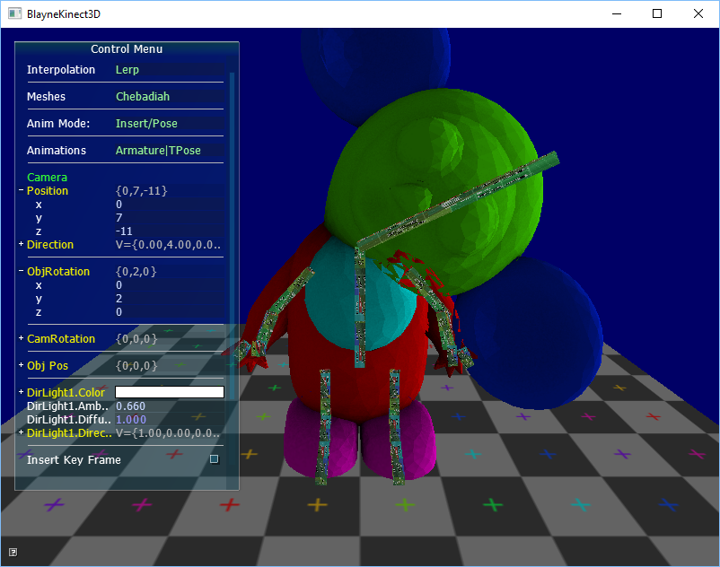

Select "Chebadiah" for best results of Mesh. Select "new Animation" (although this works for other animations to "overwrite" them). Select "Insert/Pose" if not already selected. Set the new Duration of the animation to something appropriate, such as 30. Select which frame under "Current Frame" to insert a new frame, remember each increment corresponds to a "second" in animation time. Select one of the "Bones" of the skeleton that now appear on the screen. Drag the bone to pose the armature. Click "Insert Keyframe". To play back the animation after you've finished inserting new keyframes, select "Player" under animation modes. Or "View" and manually select which frame to observe under "Current Frame".
